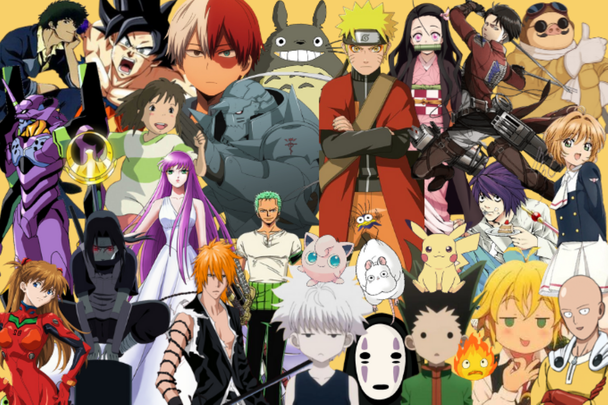

Curiosidades!!!
A ordem de leitura de um mangá japonês é a inversa da ocidental, ou seja, inicia-se da capa do livro com a brochura à sua direita (correspondendo a contracapa ocidental), sendo a leitura das páginas feita da direita para a esquerda. Scott McCloud observa, por exemplo, a presença do que ele chama de efeito de máscara, ou seja, a combinação gráfica de um personagens de quadrinhos com um ambiente realista, como também acontece na linha clara franco-belga. No entanto, nos mangás, podem ser desenhados de forma mais realista ou os personagens ou os objetos (este último quando se quer indicar certos detalhes).
Mais Vendidos
Top 10 mangás mais vendidos
- Oishinbo – 130 milhões
- Detective Conan (Case Closed) – 140 milhões
- Kochira Katsushika-Ku Kameari Koen-Mae
- Hashutsujo – 156 milhões
- Black Jack – 176 milhões
- Golgo 13 – 200 milhões
- Naruto – 205 milhões
- Bakugan
- Dragon Ball – 230 milhões
- One Piece – 345 milhões
Localização
Origem
O mangá (português brasileiro) ou manga (português europeu) (em japonês: 漫画 manga?, lit. “história em quadrinhos”), é a palavra usada para designar história em quadrinhos (português brasileiro) ou banda desenhada (português europeu) feita no estilo japonês. No Japão, o termo designa quaisquer histórias em quadrinhos.

Vários mangás dão origem a animes para exibição na televisão, em vídeo ou em cinemas, mas também há o processo inverso em que os animes tornam-se uma edição impressa de história em sequência ou de ilustrações. A palavra pode ser escrita, em japonês, das seguintes formas: kanji (漫画?), hiragana (まんが?), katakana (マンガ?) e romaji (manga). No Japão, pessoas de todas as idades leem mangás. A mídia inclui obras em uma ampla gama de gêneros: ação-aventura, negócios e comércio, comédia, detetive, drama histórico, horror, mistério, romance, ficção científica e fantasia, sexualidade, esportes e jogos e suspense, entre outros.